Benchmarking
Benchmarking Platform for State-of-the-Art RI Imaging Algorithms
We present a benchmarking platform for the state-of-the-art algorithms for synthesis imaging by interferometry (RI) provided by BASPLib: uSARA, AIRI, and R2D2. We provide access to our simulated comprehensive testbed that is composed of 200 RI inverse problems, and offer detailed guidelines to reproduce the reconstruction results published in our study [1].
RI inverse problem
In radio interferometry, each pair of antennas acquires a noisy complex measurement corresponding to a spatial Fourier component of the target radio sky, at a given time instant. The collection of the sensed spatial Fourier modes accumulated over the total observation period forms the Fourier sampling pattern, describing an incomplete coverage of the 2D Fourier plane. Considering the unknown radio image of interest \({\boldsymbol{x}^{\star}} \in \mathbb{R}_{+}^{N},\) the RI data model reads: \[ {\boldsymbol{y}} = {\boldsymbol{\Phi} {\boldsymbol{x}^{\star}} + \boldsymbol{n}} \] where \({\boldsymbol{y}} \in \mathbb{C}^M\) denotes the data vector, \({\boldsymbol{n}} \in \mathbb{C}^M\) represents a complex Gaussian random noise with a standard deviation \(\tau>0\) and mean 0. The linear operator \({\boldsymbol{\Phi}}\colon \mathbb{R}^N \to \mathbb{C}^M\) is the measurement operator (i.e., describing the acquisition process), consisting in a nonuniform Fourier sampling. The operator \({\boldsymbol{\Phi}}\) can also include a data-weighting scheme to improve the observation's effective resolution.
The radio-interferometric data model can be expressed in the image domain via a normalised back-projection using the adjoint of the measurement operator \(\boldsymbol{\Phi}^\dagger \) such that: \[\boldsymbol{x}_{\textrm{d}} =\kappa \text{Re}\{\boldsymbol{\Phi}^\dagger \boldsymbol{y}\}= \kappa \text{Re}\{\boldsymbol{\Phi}^\dagger \boldsymbol{\Phi}\boldsymbol{x}^{\star}+ \boldsymbol{\Phi}^\dagger \boldsymbol{n}\}\] where \(\boldsymbol{x}_{\textrm{d}} \in \mathbb{R}^N\) stands for the back-projected data, known as the dirty image, and \(\textrm{Re}\{\cdot\}\) stands for the real part of its argument. In this equation, the normalisation factor \(\kappa>0\) is equal to \((\max(\text{Re}\{{\boldsymbol{\Phi}}^{\dagger}{\boldsymbol{\Phi}}\boldsymbol{\delta}\}))^{-1}\), ensuring that the point spread function (PSF), defined as \(\kappa \text{Re}\{\boldsymbol{\Phi}^{\dagger}{\boldsymbol{\Phi}}\boldsymbol{\delta}\} \in \mathbb{R}^N\), has a peak value of 1. The Dirac \(\boldsymbol{\delta} \in \mathbb{R}^N\) is the image with value 1 at its center and 0 elsewhere.
RI testbed description
The testbed is composed of ground-truth images (in .fits format) and associated data files (in .mat format). The ground-truth images are derived from four real radio images, which underwent post-processing to eliminate artefacts such as deconvolution errors and noise, and endow them with high dynamic ranges.
The considered raw radio images are the giant radio galaxies 3C353 and M106, and the radio galaxy clusters A2034 and PSZ2G165.68+44.01, sourced from NRAO Archives and LOFAR surveys [2,3,4]. From each radio image, 50 curated ground-truth images of size 512\(\times\)512 were generated, characterised with large dynamic ranges varying in [103, 5\(\times\)105]. Simulated radio interferometric data associated with the ground-truth images are obtained from sampling patterns of the Very Large Array (VLA), generated under a wide variety of the observation settings, including total observation time, pointing direction, etc. Sampling patterns combining both VLA configurations A and C were considered for a balanced Fourier coverage. The total number of points in the resulting Fourier sampling patterns ranges from 0.2M to 2M. The data are corrupted with additive Gaussian noise with mean 0 and a standard deviation commensurate of the dynamic range of the corresponding ground truth images.
The simulated data are such that the spatial bandwidth of the Fourier sampling is fixed to 2/3 of the spatial Fourier bandwidth of the ground-truth images. Under these considerations, the testbed comprises 200 unique inverse problems. During imaging, the Briggs weighting scheme was applied to the data (also injected into the measurement operator) to enhance the effective resolution of the reconstructions, where the Briggs parameter was uniformly randomised between \(-1\) and \(1\), with lower values approaching uniform weighting, and higher values approaching natural weighting. The pixel resolution of the dirty images was also randomly chosen to reflect a super-resolution factor during imaging in the range \([1.5, 2.5]\).
Detailed information on the testbed can be found in [1]. The code utilised to generate a wide variety of sampling patterns and corresponding RI data is part of the utilities offered by BASPLib.


RI imaging algorithms
The BASPLib imaging algorithms used for benchmarking are:
uSARA: the unconstrained counterpart of the SARA algorithm [5,6]. It promotes a handcrafted sparsity-based regularisation, and is underpinned by the forward-backward algorithmic structure. The Python implementation of uSARA for small-scale RI imaging is available in uSARA repository.
AIRI: a Plug-and-Play (PnP) algorithm at the intersection of optimisation theory and deep learning. By inserting carefully trained AIRI denoisers into the proximal splitting algorithms, one waives the computational complexity of optimisation algorithms induced by sophisticated image priors. AIRI is the PnP counterpart of uSARA. The Python implementation of AIRI for small-scale RI imaging is available in AIRI repository.
R2D2: a novel paradigm for RI,
interpreted as a learned version of the well-known Matching Pursuit algorithm [1,7].
R2D2 reconstruction is formed as a
series of residual images, iteratively estimated as outputs of iteration-specific DNNs, each taking the previous iteration’s image estimate and associated back-projected
data residual as inputs.
We incorporate two distinct DNN architectures as the core components of R2D2:
R2D2\(_{\mathcal{A}_1}\):This configuration employs the widely-used U-Net architecture for its DNNs.
R2D2\(_{\mathcal{A}_2}\):This variant leverages a more advanced architecture, U-WDSR, which enhances performance.
The Python implementation of both R2D2\(_{\mathcal{A}_1}\) and R2D2\(_{\mathcal{A}_2}\) are
available in R2D2 repository.
U-Net / U-WDSR: an end-to-end DNN, which also corresponds to the first term of the R2D2 DNN series.
In addition to BASPLib imaging algorithms, the benchmarking results also include the celebrated CLEAN algorithm. CLEAN, recognised as a standard algorithm for RI imaging, is represented here by its multiscale variant implemented in the widely used WSClean software [8].
Evaluation metrics
To assess the performance of the reconstruction algorithms, we use quantitative metrics described below.
Ground truth fidelity (SNR,logSNR)
The Signal-to-Noise Ratio (SNR) metric is defined as:
\[\text{SNR}(\boldsymbol{x}^{\star}, \boldsymbol{x}) =
20\log_{10}\left(\frac{\|\boldsymbol{x}^{\star}\|_{2}}{\|\boldsymbol{x}^{\star} - \boldsymbol{x}\|_{2}} \right), \]
where \(\boldsymbol{x}^{\star}\) stands for the ground truth, and \(\boldsymbol{x}\) denotes the reconstructed image.
The logSNR metric emphasises faint structures by applying a logarithmic mapping to the images, parametrised by the target dynamic range \(a\):
\[ \text{r}\log(\boldsymbol{x}) = x_{\text{max}} \log_{a} \left( \frac{a}{x_{\text{max}}} \cdot \boldsymbol{x} + 1 \right), \]
where \(x_{\text{max}}\) indicates the peak pixel value of the image \(\boldsymbol{x}\).
Using this mapping, the logSNR metric is defined as:
\[ \log\text{SNR}(\boldsymbol{x}^{\star}, \boldsymbol{x}) = \text{SNR}(\text{rlog}(\boldsymbol{x}^{\star}), \text{rlog}(\boldsymbol{x})). \]
Image-domain data fidelity RDR
Image-domain data fidelity metric, known as the residual-to-dirty image ratio (RDR) is assessed using
the estimated residual dirty image defined as
\(\mathbf{r}\)=\(\boldsymbol{x}_{\textrm{d}} - \kappa \text{Re}\{\boldsymbol{\Phi}^\dagger \boldsymbol{\Phi}\boldsymbol{x}\}\).
The RDR metric is defined as:
\[ \text{RDR}(\mathbf{r}, {\boldsymbol{x}_{\textrm{d}}}) = \frac{\|\mathbf{r}\|_{2}}{\|\boldsymbol{x}_{\textrm{d}}\|_{2}} \]
Table of Results
The numerical reconstruction results obtained by state-of-the-art imaging algorithms are reported in the table below. The reconstruction quality is assessed using metrics such as SNR, logSNR, and RDR. Computational performance is detailed in terms of the total number of iterations (I) and the total reconstruction time (ttot). Please note that reported timings depend on the machine used and are provided for reference only. \([\boldsymbol{\Phi}^\dagger \boldsymbol{\Phi}]_{imp.}\) is indicating the measurement operator implementation. The subscript \(\mathcal{T}_2\) in R2D2 varients refer to the generlised VLA-specific training set that is used to train these R2D2 algorithms. All reported values represent mean \(\pm\) standard deviation, calculated over 200 inverse problems.
| Algorithm | SNR (dB) | logSNR (dB) | RDR (×10-3) | I | ttot. (s) | \([\boldsymbol{\Phi}^\dagger \boldsymbol{\Phi}]_{imp.}\) |
|---|---|---|---|---|---|---|
| CLEAN | 12.0±19.3 | 9.4±18.9 | 3.29±28.2 | 8.4±1.0 | 106.5±81.6 | - |
| uSARA | 28.1±3.4 | 20.4±3.4 | 2.15±27.5 | 1482.2±586.1 | 368.8±296.8 | TorchKbNufft |
| 1490.7±563.2 | 216.7±119.3 | PyNUFFT | ||||
| 1483.1±587.0 | 103.0±39.52 | FINUFFT | ||||
| 1482.6±586.4 | 88.03±31.98 | PSF | ||||
| AIRI | 28.3±3.1 | 21.1±3.8 | 2.24±28.0 | 5000.0±0.0 | 937.4±801.8 | TorchKbNufft |
| 21.0±3.8 | 566.5±355.8 | PyNUFFT | ||||
| 157.0±36.92 | FINUFFT | |||||
| 114.2±3.450 | PSF | |||||
| U-Net | 17.9±3.0 | 6.8±3.9 | 113.3±589.2 | 1 | 0.641±0.110 | - |
| U-WDSR | 16.0±3.6 | 6.6±3.8 | 155.8±815.5 | 1 | 0.662±0.031 | - |
| R2D2\({\mathcal{A}_1,\mathcal{T}_2}\) | 30.0±3.0 | 23.4±4.2 | 4.07±91.6 | 18.3±5.6 | 7.243±4.131 | TorchKbNufft |
| 6.932±3.960 | PyNUFFT | |||||
| 3.771±1.224 | FINUFFT | |||||
| 3.342±0.931 | PSF | |||||
| R2D2\({\mathcal{A}_2,\mathcal{T}_2}\) | 31.2±2.4 | 24.6±4.2 | 2.22±28.1 | 15.8±5.5 | 8.831±3.923 | TorchKbNufft |
| 9.023±4.112 | PyNUFFT | |||||
| 5.951±2.199 | FINUFFT | |||||
| 5.649±1.911 | PSF |
Reconstructions & Residual dirty images
Reconstruction images obtained by the RI algorithms associated with one inverse problem selected from our testbed (ID:80009) are displayed below. In this case, the ground truth is characterised by a dynamic range of 150,000.
Estimated model images:
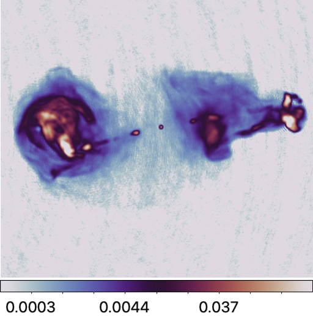
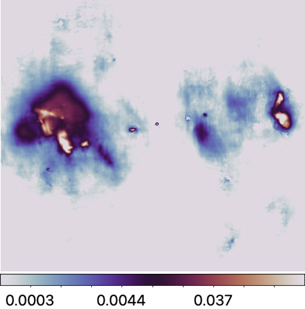
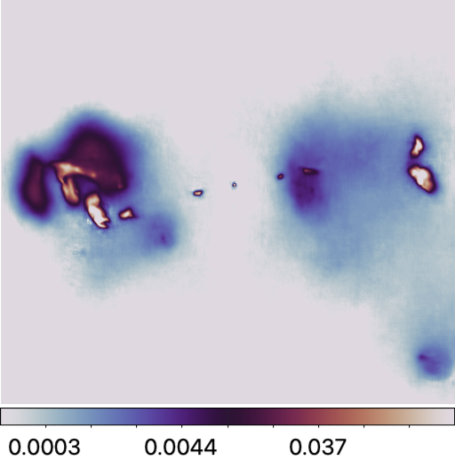
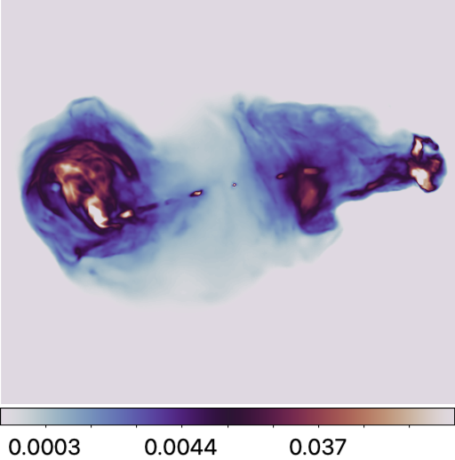
Residual dirty images:
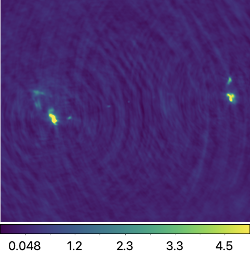
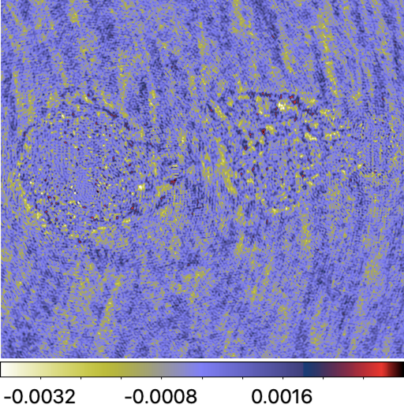
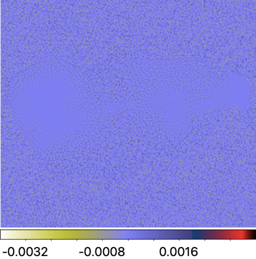
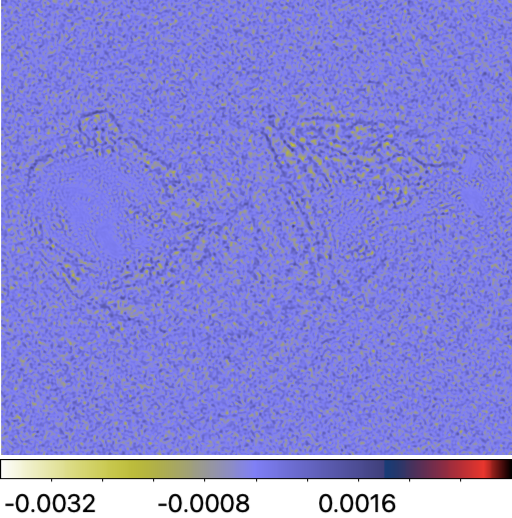
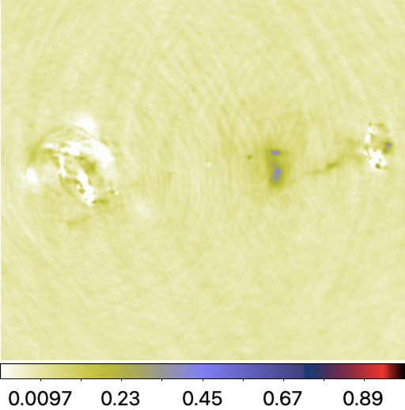
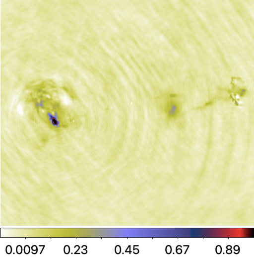
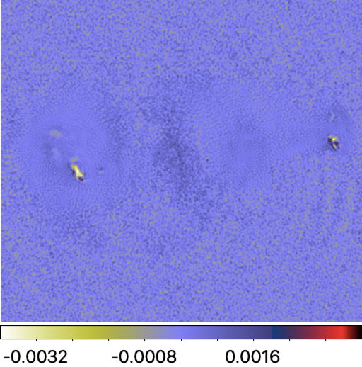
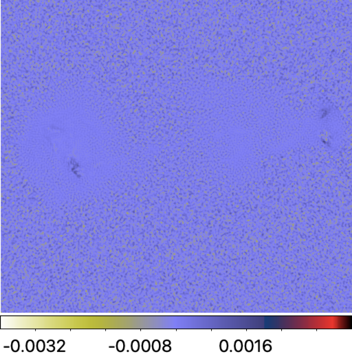
How to Use the Benchmarking Platform
In what follows, we provide instructions to reproduce the results summarised in the above table.
Setup
Setting up the main directory
Firstly, set up the main directory, which will comprise the benchmark testbed, RI imaging repositories, and pre-trained DNNs (for AIRI and R2D2). Replace
/path/to/your/directory with your local path. Subdirectories will be created accordingly.

main_dir=/path/to/your/directory cd $main_dir mkdir -p $main_dir/data # subdirectory for testbed
Downloading testbed
Secondly, download the testbed zip files. These correspond to compressed ground truth files in .fits and data files in .mat format.
# ground truth images wget -O "$main_dir/data/gdth.tar.gz" \ "https://www.dropbox.com/scl/fi/mkkvfwleoh9udztlu4uuu/gdth.tar.gz?rlkey=incfutaoiqx3dlwnf8npxn1we&st=tdi1dwjw&dl=0" # measurement data wget -O $main_dir/data/data.tar.gz \ "https://www.dropbox.com/scl/fi/91werx96vc5j28xjxzdqq/data.tar.gz?rlkey=7s837c2whdniwli6kt0pkeae3&st=q1s6520h&dl=0" \
Thirdly, extract the compressed files in the dedicated subdirectory.
tar -xf $main_dir/data/gdth.tar.gz --strip-components=7 -C $main_dir/data/ tar -xf $main_dir/data/data.tar.gz --strip-components=7 -C $main_dir/data/ rm -r $main_dir/data/data.tar.gz rm -r $main_dir/data/gdth.tar.gz
You can access each inverse problem details via this Excel
 file.
file.
Setting up imaging algorithms repositories
Python environment
Firstly, create your Python environment using either venv or conda, with Python
version >= 3.10.0. In this tutorial, we will be using venv and pip.
python3 -m venv $main_dir/basplib
Secondly, activate this new environment.
source $main_dir/basplib/bin/activate
The uSARA, AIRI and R2D2 repository is Pytorch-based for accelerated computation on GPU. To ensure
compatibility of your CUDA driver version, follow PyTorch instruction.
If your CUDA version is older than what is displayed, please refer to
here for the newest PyTorch version compatible for your GPU.
Thirdly, once PyTorch is installed, install the remaining dependencies.
wget -P "$main_dir" https://raw.githubusercontent.com/basp-group/R2D2-RI/main/requirements.txt pip install -r $main_dir/requirements.txt
uSARA & AIRI
Clone the repository to the current directory by running the command below.
git clone --recurse-submodules https://github.com/basp-group/Small-scale-RI-imaging.git cd ./Small-scale-RI-imaging
The --recurse-submodules flag is required so that the required sub-modules RI-measurement-operator will be cloned at the same time.
Pre-trained AIRI denoisers
Pre-trained AIRI denoisers are in .onnx format. From main AIRI directory run commands below to download the denoiser shelf compressed in a .tar.gz file, and extract the DNNs in the appropriate subdirectory.
wget -O ./airi_denoisers/airi_mix_denoisers.tar.gz \ "https://www.dropbox.com/scl/fi/4grlzujhpyovzbn4hm3nd/airi_mix_denoisers.tar.gz?rlkey=ej1k48faisni14fs04tgbddyi&st=508oy66y&dl=0" # extract the files tar -xzf ./airi_denoisers/airi_mix_denoisers.tar.gz -C ./airi_denoisers/ # Remove the zip file rm ./airi_denoisers/airi_mix_denoisers.tar.gz
Two additional collections of pre-trained AIRI denoisers are available [9]. While they are not required for this benchmarking, they can be utilisd if needed.
wget -O ./airi_denoisers/v1_airi_astro-based_oaid_shelf.zip \ "https://researchportal.hw.ac.uk/files/115109618/v1_airi_astro-based_oaid_shelf.zip" wget -O ./airi_denoisers/v1_airi_mri-based_mrid_shelf.zip \ "https://researchportal.hw.ac.uk/files/115109619/v1_airi_mri-based_mrid_shelf.zip" # extract the files unzip "./airi_denoisers/v1_airi_astro-based_oaid_shelf.zip" -d "./airi_denoisers/" unzip "./airi_denoisers/v1_airi_mri-based_mrid_shelf.zip" -d "./airi_denoisers" # Remove the zip file rm ./airi_denoisers/v1_airi_astro-based_oaid_shelf.zip rm ./airi_denoisers/v1_airi_mri-based_mrid_shelf.zip
R2D2
The R2D2 repository encompasses the end-to-end DNNs U-Net, U-WDSR, R2D2 variants: R2D2\(\mathcal{A}_1\),
and R2D2\(\mathcal{A}_2\). The algorithm of choice is selected from the input parameters of the imager.
The currently available R2D2 models are trained specifically for the imaging settings considered in [1].
Deviating from these settings may result in sub-optimal results.
First clone the repository.
git clone --recurse-submodules https://github.com/basp-group/R2D2-RI cd ./R2D2-RI
Download the pretrained R2D2\(\mathcal{A}_1\) model.
r2d2_ckpt_path=./ckpt/R2D2_A1 mkdir -p $r2d2_ckpt_path wget -O $r2d2_ckpt_path/R2D2_A1.zip https://pure.hw.ac.uk/ws/portalfiles/portal/146289536/R2D2_A1_T2_Realisation1.zip # Extract the files unzip -j $r2d2_ckpt_path/R2D2_A1.zip -d $r2d2_ckpt_path # Remove the zip file rm $r2d2_ckpt_path/R2D2_A1.zip
Download the pretrained R2D2\(\mathcal{A}_2\) model.
r2d2_ckpt_path=./ckpt/R2D2_A2 mkdir -p $r2d2_ckpt_path wget -O $r2d2_ckpt_path/R2D2_A2.zip https://pure.hw.ac.uk/ws/portalfiles/portal/146314175/R2D2_A2_T2_Realisation1.zip # Extract the files unzip -j $r2d2_ckpt_path/R2D2_A2.zip -d $r2d2_ckpt_path # Remove the zip file rm $r2d2_ckpt_path/R2D2_A2.zip
CLEAN
We use the multi-scale variant of CLEAN in WSClean. Please refer to WSClean official website for full instructions on how to install the software.
Imaging
Instructions to run BASPLib RI imaging algorithms and WSClean are outlined.
We recall the imaging settings are as follows: (i) the target image is of size 512x512 pixels, with
(ii) a random pixel size corresponding to super-resolution factor between [1.5, 2.5], and
(iii) random Briggs weighting with parameter with range between [-1, 1] is applied to the data.
All algorithms take as input a configuration file in either JSON (for uSARA and AIRI)
or YAML format (for U-Net, U-WDSR and R2D2 variants: R2D2\(\mathcal{A}_1\), and R2D2\(\mathcal{A}_2\)).
Below are example Bash scripts designed to image all inverse problems at once.
Users are encouraged to customise these scripts to suit the specifications of their local machines as needed.
uSARA
For uSARA imaging algorithm, all inverse problems were solved with fixed parameters.
For best results, specifically the regularisation parameter was set to two times its heuristic value.
You can access sample config file for uSARA in uSARA.json.
uSARA imager can be run by calling:
#!/bin/bash # Configuration paths config_path="./config/example.json" data_file_base="/path/to/data/" log_file="./log/" # Values to update result_path="./outputs/" algorithm="usara" nufft_package="finufft" # tkbn/finufft/pynufft/psf heu_reg_param_scale=2.0 # Activate Python environment source $main_dir/basplib/bin/activate echo "Script started at: $(date)" # Loop over data files for data in "$data_file_base"/*.mat; do data_filename=$(basename "$data" .mat) # Extract the source name (first part of the filename before "_") source_name=$(echo "$data_filename" | cut -d'_' -f1) temp_config="temp_config_${data_filename}.json" # Create a temporary JSON file cp "$config_path" "$temp_config" # Modify the temporary JSON file sed -i "s|\("algorithm": \).*|\1"$algorithm",|" "$temp_config" sed -i "s|\("result_path": \).*|\1"$result_path/",|" "$temp_config" sed -i "s|\("data_file": \).*|\1"$data",|" "$temp_config" sed -i "s|\("nufft_package": \).*|\1"$nufft_package",|" "$temp_config" sed -i "s|\("weight_load": \).*|\1false,|" "$temp_config" sed -i "s|\("heu_reg_param_scale": \).*|\1$heu_reg_param_scale,|" "$temp_config" # Run the Python script with the temporary config python3 run_imager.py -c "$temp_config" --data_file "$data" # Remove the temporary config file after processing rm "$temp_config" done # Log the end time echo "Script completed at: $(date)" | tee -a "$log_file"
AIRI
The AIRI parameter was fixed to the heuristic value for all RI data, except for those simulated from the
radio image of 3C353, where 3 times the heuristic value was used.
You can access sample config files for AIRI in
AIRI.json and
AIRI imager can be run by calling:
#!/bin/bash # Configuration paths config_path="./config/example.json" data_file_base="/path/to/data/" log_file="./log/" dnn_shelf_path="./airi_denoisers/airi_mix_denoisers/shelf.csv/" # Values to update result_path="./outputs/" algorithm="airi" nufft_package="finufft" # tkbn/finufft/pynufft/psf # Activate Python environment source $main_dir/basplib/bin/activate echo "Script started at: $(date)" # Loop over data files for data in "$data_file_base"/*.mat; do data_filename=$(basename "$data" .mat) # Extract the source name (first part of the filename before "_") source_name=$(echo "$data_filename" | cut -d'_' -f1) # Conditional assignment of heu_noise_scale if [[ "$source_name" == "3c353" ]]; then heu_noise_scale=3.0 else heu_noise_scale=1.0 fi temp_config="temp_config_${data_filename}.json" # Create a temporary JSON file cp "$config_path" "$temp_config" # Modify the temporary JSON file sed -i "s|\("algorithm": \).*|\1"$algorithm",|" "$temp_config" sed -i "s|\("result_path": \).*|\1"$result_path/",|" "$temp_config" sed -i "s|\("data_file": \).*|\1"$data",|" "$temp_config" sed -i "s|\("nufft_package": \).*|\1"$nufft_package",|" "$temp_config" sed -i "s|\("weight_load": \).*|\1false,|" "$temp_config" sed -i "s|\("heu_noise_scale": \).*|\1$heu_noise_scale,|" "$temp_config" sed -i "s|\("dnn_shelf_path": \).*|\1"$dnn_shelf_path",|" "$temp_config" # Run the Python script with the temporary config python3 run_imager.py -c "$temp_config" --data_file "$data" # Remove the temporary config file after processing rm "$temp_config" done # Log the end time echo "Script completed at: $(date)" | tee -a "$log_file"
R2D2
You can access sample config file for R2D2 in R2D2.yaml.
The R2D2 imager can be run by calling:
#!/bin/bash # Activate the environment source $main_dir/basplib/bin/activate # Prompt user for input read -p "Enter architecture (U-Net or U-WDSR DNN): " architecture read -p "Enter number of iterations (25 available): " num_iter read -p "Enter NUFFT package (tkbn/finufft/pynufft/psf): " nufft_pkg # Set paths if [ "$architecture" = "U-Net" ]; then
ckpt_path="./ckpt/R2D2_A1/"
num_chans=64
output_path="./outputs/R2D2_A1/"
elif [ "$architecture" = "U-WDSR" ]; then
ckpt_path="./ckpt/R2D2_A2/"
num_chans=32
output_path="./outputs/R2D2_A2/"
fi data_file_base="/path/to/data/" yaml_template="./config/inference/R2D2.yaml" save_all_outputs=True prune=True sigma_res_tol=1e-3 # Iterate over all .mat files in the specified directory for data_file in "$data_file_base"/*.mat; do # Extract the base name of the data file without the extension base_name=$(basename "$data_file" .mat) specific_output_path="$output_path" mkdir -p "$specific_output_path" # Construct the corresponding ground truth file path gdth_file="/path/to/ground-truth/${base_name}_gdth.fits" # Create a unique YAML file for this iteration yaml_file="/path/to/template/temp_${base_name}.yaml" cp "$yaml_template" "$yaml_file" # Update the YAML file with the user-provided inputs and other parameters sed -i "s|ckpt_path:.*|ckpt_path: $ckpt_path|" "$yaml_file" sed -i "s|data_file:.*|data_file: $data_file|" "$yaml_file" sed -i "s|gdth_file:.*|gdth_file: $gdth_file|" "$yaml_file" sed -i "s|num_iter:.*|num_iter: $num_iter|" "$yaml_file" sed -i "s|num_chans:.*|num_chans: $num_chans|" "$yaml_file" sed -i "s|ckpt_realisations:.*|ckpt_realisations: $ckpt_realisations|" "$yaml_file" sed -i "s|die_calib:.*|die_calib: $die_calib|" "$yaml_file" sed -i "s|architecture:.*|architecture: $architecture|" "$yaml_file" sed -i "s|save_all_outputs:.*|save_all_outputs: $save_all_outputs|" "$yaml_file" sed -i "s|prune:.*|prune: $prune|" "$yaml_file" sed -i "s|sigma_res_tol:.*|sigma_res_tol: $sigma_res_tol|" "$yaml_file" sed -i "s|nufft_pkg:.*|nufft_pkg: $nufft_pkg|" "$yaml_file" sed -i "s|output_path:.*|output_path: $specific_output_path|" "$yaml_file" sed -i "s|res_on_gpu:.*|res_on_gpu: True|" "$yaml_file" # Ensure the output path exists mkdir -p "$output_path" # Run the Python script with the updated YAML file python3 src/imager.py --config "$yaml_file" # Optionally, remove the temporary YAML file after the run rm "$yaml_file" done
For running R2D2 imager save above bash script into a bash file like R2D2.sh, and run like:
bash R2D2.sh The script will prompt you to enter the R2D2 underpinned DNN architecture name. For example, you can enter U-Net, U-WDSR. The script will then execute the corresponding configuration for the specified algorithm. Later, user need to enter the the number of R2D2 iteration needed. 25 iterations are available. For U-Net (resp. U-WDSR) the number of input channels should be input as 64 (resp. 32). BASPLib provides four options for implementing the RI measurement operator model. Three of these consist in different implementations of the NUFFT including TorchKbNufft [10], FINUFFT [11], and PyNUFFT [12]. The fourth option leverages the PSF, which under the assumption of a narrow field of view, enables approximating the RI mapping operator \(\boldsymbol{\Phi}^\dagger \boldsymbol{\Phi}\) via a convolution with the PSF.
CLEAN
For CLEAN, specifically its multi-scale variant all inverse problems were solved with fixed parameters. WSClean imager can be run by calling:
#!/bin/bash # Define variables data_files="/path/to/ms_files/folder" output_path="/path/to/save/outputs/" msFile_detail_path="/path/to/meas_convert.csv" niter=2000000 briggs_factor=0 # Log the start time echo "Script started at: $(date)" # Loop through each .mat file in the directory for data_file in "$data_files"/*.mat; do base_name=$(basename "$data_file" .mat) echo "Processing file: $data_file" # Read cell_size from the CSV file based on the base_name cellsize=$(awk -F, -v filename="$base_name" 'NR > 1 && $1 == filename {print $3}' "$msFile_detail_path") # Check if cellsize is found if [ -z "$cellsize" ]; then echo "Error: No matching cell size found for $base_name in $msFile_detail_path" continue fi # Run the MATLAB command for each .mat file wsclean -size 512 512 -scale "$cellsize"asec -data-column DATA -padding 2 -weight briggs "$briggs_factor" \ -niter "$niter" -nwlayers 1 -j 1 -mem 0.2 -multiscale -gain 0.1 -mgain 0.8 -nmiter 0 -auto-mask 1.5 \ -auto-threshold 0.5 -name "$output_path"/wsclean-briggs"$briggs_factor"- "$data_file" # Log the completion of each file echo "Finished processing file: $data_file" done # Log the end time echo "Script completed at: $(date)"
Note: Additional information on how to convert the data files into a measurement set that is readable by WSClean will be provided soon.
Evaluation metrics calculation
The evaluation metrics can be calculated using this Python file. To run calculate_metrics.py you can use below bash script:
#!/bin/bash # Define variables MODEL="R2D2_A1" # or "R2D2_A2" or "uSARA" or "AIRI" DATA_FILE="/path/to/data/" EXCEL_SAVE_PATH="/path/to/save/reslt_excel_file/$MODEL.xlsx" GT_PATH="/path/to/GT/images/" MODEL_OUTPUTS="./outputs/$MODEL" # Activate your virtual environment source /work/ec110/ec110/aa2201/environment/R2D2_venv/bin/activate # Run the Python script if [[ "$MODEL" = "AIRI" || "$MODEL" = "uSARA" ]]; then python calculate_metrics.py --data_file "$DATA_FILE" --excel_save_path "$EXCEL_SAVE_PATH" --GT_path "$GT_PATH" --model_outputs "$MODEL_OUTPUTS" --model "$MODEL" elif [[ "$MODEL" = "R2D2_A1" || "$MODEL" = "R2D2_A2" ]]; then for i in {2..2}; do R2D2_iteration=${i} python calculate_metrics.py --data_file "$DATA_FILE" --excel_save_path "$EXCEL_SAVE_PATH" --GT_path "$GT_PATH" --model_outputs "$MODEL_OUTPUTS" --model "$MODEL" --R2D2_iteration "$R2D2_iteration" done fi
References
[1] Aghabiglou A, Chu CS, Tang C, Dabbech A, Wiaux Y. Towards a robust R2D2 paradigm for radio-interferometric imaging: revisiting DNN training and architecture. arXiv:2503.02554v1[2] Edler HW, de Gasperin F, Shimwell TW, Hardcastle MJ, Boselli A, Heesen V, McCall H, Bomans DJ, Brüggen M, Bulbul E, Chyży KT. ViCTORIA project: The LOFAR HBA Virgo Cluster Survey. Astronomy & Astrophysics. 2023 Aug 1;676:A24. | DOI:10.1051/0004-6361/202346458
[3] Shimwell TW, Hardcastle MJ, Tasse C, Best PN, Röttgering HJ, Williams WL, Botteon A, Drabent A, Mechev A, Shulevski A, van Weeren RJ. The LOFAR two-metre sky survey-V. Second data release. Astronomy & astrophysics. 2022 Mar 1;659:A1. | DOI:10.1051/0004-6361/202142484
[4] Botteon A, Shimwell TW, Cassano R, Cuciti V, Zhang X, Bruno L, Camillini L, Natale R, Jones A, Gastaldello F, Simionescu A. The Planck clusters in the LOFAR sky-I. LoTSS-DR2: new detections and sample overview. Astronomy & Astrophysics. 2022 Apr 1;660:A78. | DOI:10.1051/0004-6361/202143020
[5]Carrillo RE, McEwen JD, Wiaux Y. Sparsity Averaging Reweighted Analysis (SARA): a novel algorithm for radio-interferometric imaging. Monthly Notices of the Royal Astronomical Society. 2012 Oct 21;426(2):1223-34. | DOI:10.1111/j.1365-2966.2012.21605.x
[6] Onose A, Dabbech A, Wiaux Y. An accelerated splitting algorithm for radio-interferometric imaging: when natural and uniform weighting meet. Monthly Notices of the Royal Astronomical Society. 2017 Jul;469(1):938-49. | DOI:10.1093/mnras/stx755
[7] Dabbech A, Aghabiglou A, San Chu C, Wiaux Y. CLEANing Cygnus A deep and fast with R2D2. The Astrophysical Journal Letters. 2024 May 7;966(2):L34. | ArXiv:2309.03291 | DOI:10.3847/2041-8213/ad41df
[8] Offringa AR, Smirnov O. An optimised algorithm for multiscale wideband deconvolution of radio astronomical images. Monthly Notices of the Royal Astronomical Society. 2017 Oct;471(1):301-16. | DOI:10.1093/mnras/stx1547
[9] Terris M, Tang C, Jackson A, Wiaux Y. Plug-and-play imaging with model uncertainty quantification in radio astronomy. arXiv preprint arXiv:2312.07137. 2023 Dec 12.
[10] Muckley, M. J., Stern, R., Murrell, T., & Knoll, F. TorchKbNufft: A High-Level, Hardware-Agnostic Non-Uniform Fast {Fourier} Transform. ISMRM Workshop on Data Sampling & Image Reconstruction. 2020 May.
[11] Shih, Y.-h., Wright, G., And´en, J., Blaschke, J., & Barnett, A. H: cuFINUFFT: a load-balanced GPU library for general-purpose nonuniform FFTs. 2021 IEEE International Parallel and Distributed Processing Symposium Workshops (IPDPSW), 688–697 | ArXiv:2102.08463
[12] Lin, J.-M. Python non-uniform fast Fourier transform (PyNUFFT): An accelerated non-Cartesian MRI package on a heterogeneous platform (CPU/GPU). 2018, Journal of Imaging. 4, 51. | ArXiv:1710.03197 | DOI:10.3390/jimaging4030051
Support
If you need assistance with setting up the BASPLib imaging algorithms or encounter any issues during installation, please don’t hesitate to contact our support team.